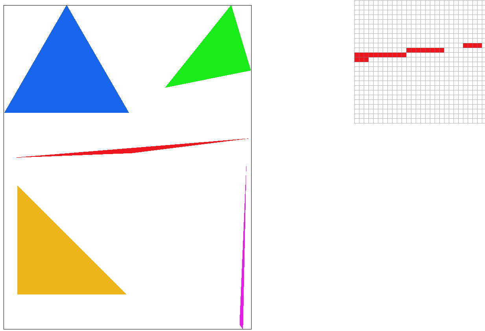
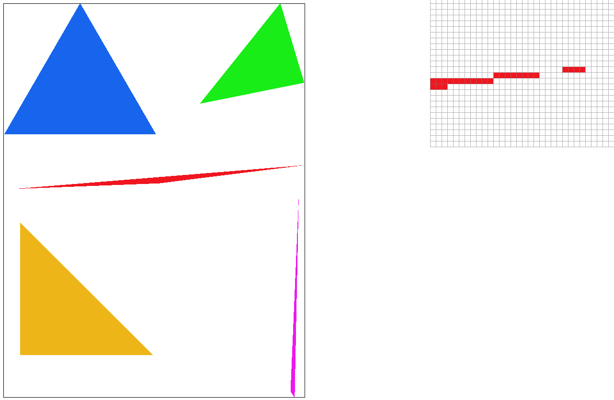
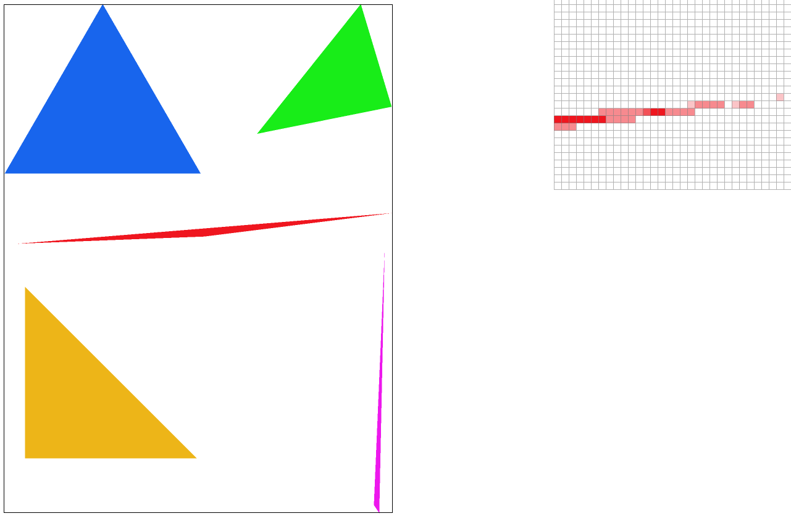
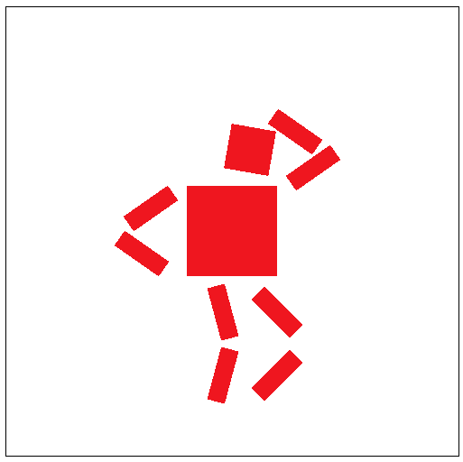
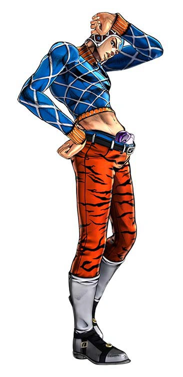
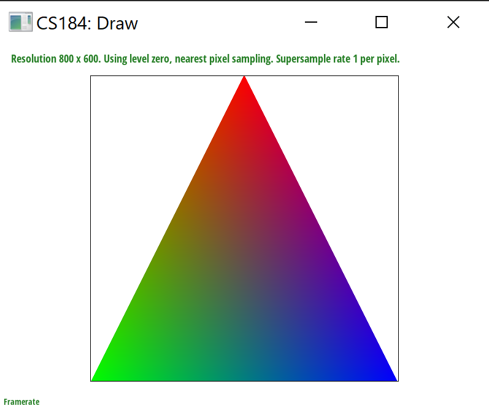
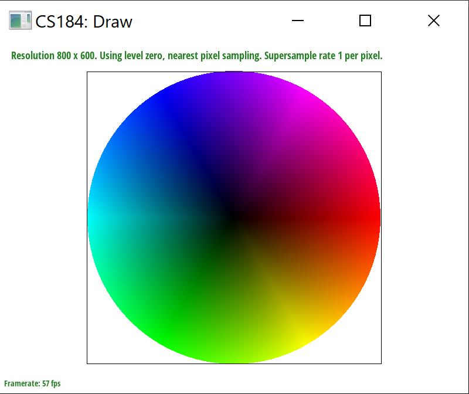
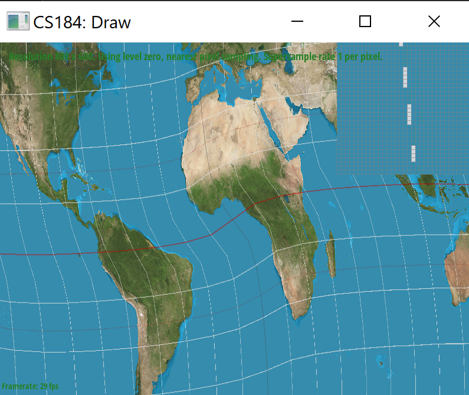
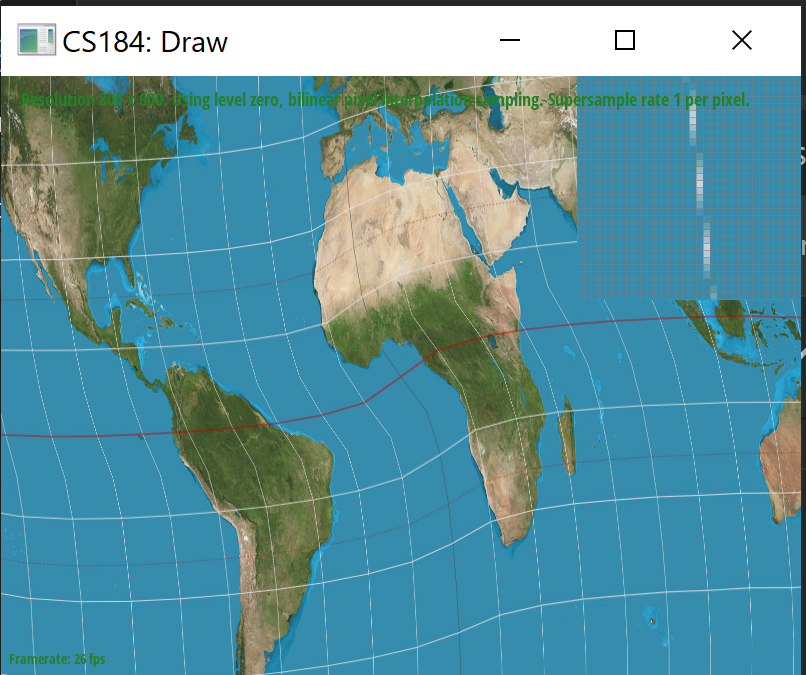
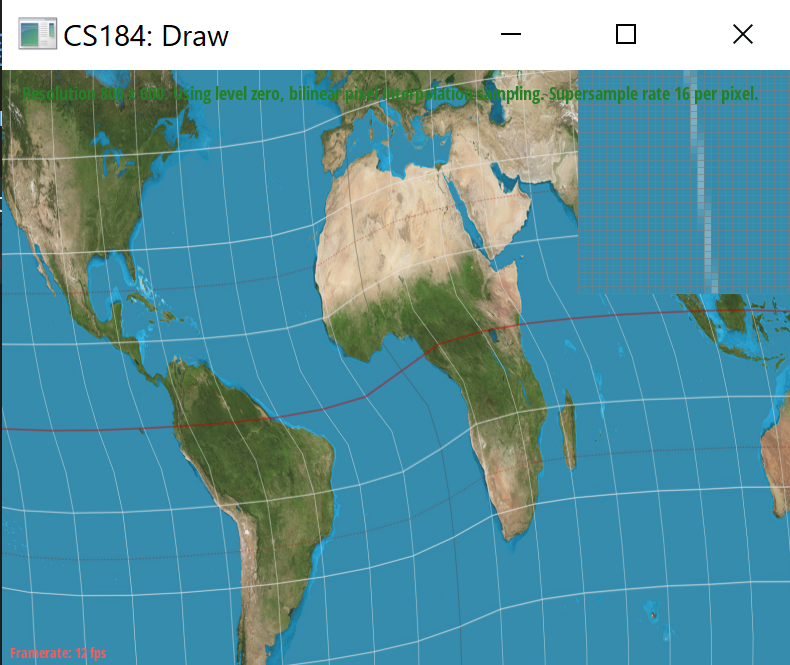

We implemented several rasterization techniques that translate SVG files onto a display. Through these exercises, we gained a lot of experience on various sampling techniques, mipmaps, and transforms. This homework was especially interesting because we were building new techniques on top of previous implemetations of simpler methods. It was interesting to see how minor bugs in earlier tasks would go unnoticed, but would completely break later tests. It was interesting to see how these minor bugs gave almost no indication of problems in the test images, but would completeley break later tasks.
First, we checked the winding direction of the triangle vertices and swapped the direction accordingly if needed. Then, we calculated the bounding box containing the input triangle so that we could optimize the runtime by iterating through all the pixels within that box.
We checked if each pixel was inside the triangle by passing the midpoint of each pixel into our helper function is_inside_triangle(). This function used the Three Line Test we covered in Lecture 2 to check if the given point was inside all 3 edges of the triangle. For each edge (x0, y0), (x1, y1), and (x2, y2), we checked if the following condition was true:
If this condition was true for all 3 edges, we filled the pixel with the input color. On each pixel, we are computing a constant number of arithmetic operations in our is_inside_triangle function, so the runtime of processing each pixel is O(1). We process bw * bh pixels, where bw and bh are the width and heigh respectively of the bounding box. Thus, the overall runtime of our algorithm is O(bw * bh), which is at least as efficient as sampling only within the bounding box of the triangle.
|

|
In this part, we had to make a few modifications to our algorithm in Part 1 in order to support supersampling. In supersampling, instead of taking a single point within a pixel as reference,
we need to take sample_rate number of points within each pixel. This gives us more information to determine the color value of a pixel by averaging from multiple points within a
single pixel. Thus, if for example, a pixel is cut in half by the edge of a triangle, with half the pixel inside the triangle and the other half outside, supersampling will average the color
from both the inside and the outside of the triangle. This smooths out jagged edges (jaggies) by making edges appear less distinct.
In order to implement this, we essentially needed to upscale the original image by a factor of sqrt(sample_rate), fill the sample buffer, then downsample the sample buffer data into the frame
buffer by averaging sqrt(sample_size) x sqrt(sample_size) size sections from the sample buffer into single frame buffer pixels. To make the sample buffer the appropriate size, we modified
set_sample_rate(), set_framebuffer_target(), and fill_pixel() to support a sample buffer of size width * height * sample_rate. In order to upscale the original image, we needed
to add more looping logic in rasterize_point() to iterate sqrt(sample_rate) times in the x and y direction of each point, sampling a total of sample_rate points within
each pixel. Then, we also modified resolve_to_framebuffer() to translate from the higher dimensional sample_buffer to the rgb_framebuffer_target. Instead of
a 1:1 pixel translation, to determine the color of a certain frame buffer pixel we needed to loop through all supersampled points taken from that pixel and average their color values.
|

|

|
|
|
In this task, we implemented the three 2D transformations we covered in lecture.
We updated our robot to hit Guido Mista's Jojo pose, but it probably looks more like Michael Jackson. We added several rotations and modified the translations to bend the robot's legs, arms, and head.
|

|

|
Barycentric coordinates allow us to easily linearly interpolate some feature of the triangle, in this case color, at a certain point (x, y). Given a triangle wth 3 vertices A, B, and C, we can use the Barycentric coordinate formula to calculate (α, β, γ) such that the color at the point (x, y) is given as α * A + β * B + γ * C. α, β, and γ are proportional to the distance between point (x, y) and each of the 3 corners respectively, thus Barycentric coordinates allow us to calculate the color at point (x, y) using a weighted average of the colors at the 3 corners. For example, in Figure 7 below, the triangle has corners colored red, green, and blue, resulting in a gradient mix of colors within the triangle. Points closer to the corners would have colors closer to the respective corner's color.
To do this, we first preprocessed the input triangle in the same way as we explained for part 2. However, instead of filling the pixel with a color provided in the input, we used the Barycentric coordinate formula to first calculate α, β, and γ. Then we interpolated the color at the pixel using the formula α * A + β * B + γ * C. This is the color we input into fill_pixel().
|

|

|
In this part, we built on top the Barycentric coordinate algorithm from part 4 to perform pixel sampling. Similar to part 4, we calculated Barycentric coordinates α, β, and γ and used them to interpolate u0 and v0. Then, we passed u0 and v0 as a 2D vector uv into one of the two pixel sampling functions, nearest pixel-sampling or bilinear sampling.
In nearest pixel-sampling, we scaled uv's x and y values by the texture map's dimensions, floored the coordinates to get the nearest neighbor, and finally clamped the point to the dimensions of the texture map. These texture pixel coordinates were then passed into get_texel() to retrieve the color.
In bilinear sampling, we scaled uv's x and y values by the texture map's dimensions, rounded the coordinates, and finally clamped the point to the dimensions of the texture map. The resulting coordinates represent the center of uv's nearest 4 pixel section. We will use these 4 neighboring pixels to generate the color value for uv. First, we calculate the linear interpolations of the top two neighbors and the bottom two neighbors. Then, we take the linear interpolation of those 2 values to get the final color value for uv.
The major difference between nearest pixel-sampling and bilinear sampling is that nearest takes the color value at the single nearest pixel, while bilinear sampling takes an average of 4 neighboring pixels. From the figures below, we can see that with a supersampling rate of 1, bilinear sampling results in smoother edges than nearest. However, at a supersampling rate of 16, bilinear and nearest actually produce pretty similar images. This is because supersampling already does some smoothing within each pixel so the additional smoothing from bilinear sampling is harder to differentiate. Thus, we can expect to observe a large difference between these 2 sampling methods when the texture has many small details and edges. Bilinear sampling will be able to average out multiple pixel textures to smooth out jaggies along those features but nearest will not.
|

|
|
|

|

|
If you are not participating in the optional art competition, don't worry about this section!